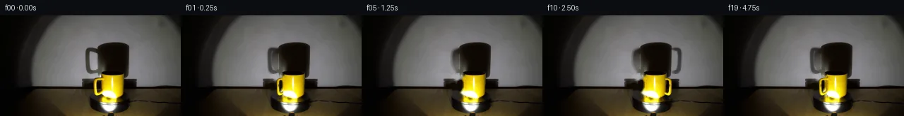
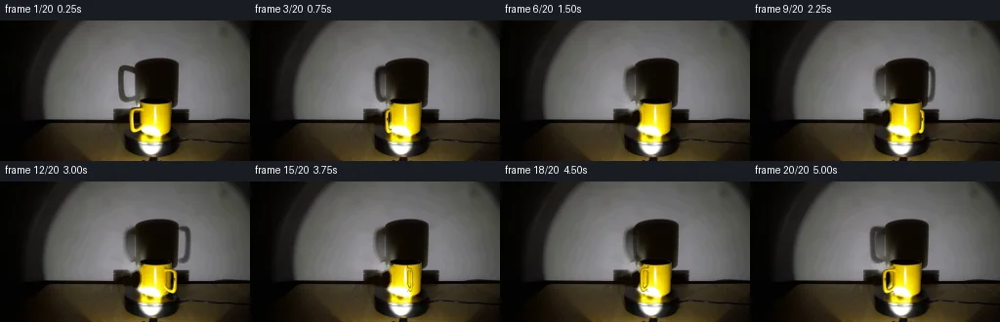
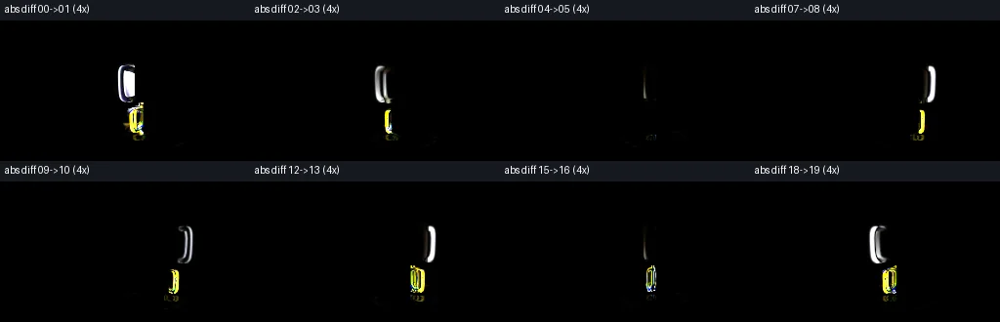

V0 · 初版即最终版
![]()
Observable Generation Trace
把最终像素视频、Harness 冻结的每轮候选、真实工具事件和 Agent 自述放在同一页。可观测证据与模型自述分开标记，避免把“模型说它检查过”误当成真实工具调用。
![首帧]()
Static locked-off single-shot with fixed frame throughout filmed with constant framerate in real-time. The scene shows a realistic scientific demonstration. The scene only contains the described setup and actions. The yellow mug sits on the black, clockwise-rotating platform, and the spotlight points toward the yellow mug. The yellow mug rotates clockwise on the black platform while the spotlight casts a large shadow on the wall behind it.
首帧显示在左侧播放器初始画面。Track 权限、隔离和 tensor 一致性来自 run manifest，而不是 METHOD.md。
上方并排显示初版和最终版，默认同步播放；下方每个版本可独立播放，也可勾选加入同步播放。仅检查图更新的连续重复快照已合并，回退旧视频仍保留为一次修订。
Observable events
来源：events.jsonl + run manifest
此 Track 禁止读取输出图片。逐轮预览由外部 Harness 自动冻结，只用于事后审计，生成 Agent 当时看不到这些页面。
Frozen candidates
每张图来自该 round 的真实 00 / 01 / 05 / 10 / 19 帧

pixels dded4350506b5db5 · code 9fe3f7df841a23c1
--- previous/generate.py +++ current/generate.py @@ -0,0 +1,221 @@ +#!/usr/bin/env python3 +"""Generate a deterministic 20-frame pixel animation from first_frame.png. + +The source frame supplies every texture. Only the mug handle, its projected +shadow, and very subtle turntable surface variation are animated. The model +uses an orthographic projection of a horizontal circular rotation: projected +horizontal radius and profile width vary with cos(angle), while front/back +ordering follows sin(angle). +""" + +from pathlib import Path + +import cv2 +import numpy as np +from PIL import Image, ImageDraw + +from artifact_io import save + + +ROOT = Path(__file__).resolve().parent +W, H = 256, 144 + + +def soft_yellow_alpha(rgb: np.ndarray) -> np.ndarray: + """Soft chroma key for the photographed yellow enamel and warm edge.""" + f = rgb.astype(np.float32) + r, g, b = f[..., 0], f[..., 1], f[..., 2] + chroma = np.minimum((r - 1.55 * b - 8.0) / 65.0, + (g - 1.42 * b - 5.0) / 60.0) + light = (r + g - 85.0) / 130.0 + return np.clip(np.minimum(chroma, light), 0.0, 1.0) + + +def composite(dst: np.ndarray, color: np.ndarray, alpha: np.ndarray) -> np.ndarray: + a = np.clip(alpha, 0.0, 1.0)[..., None] + return np.clip(dst.astype(np.float32) * (1.0 - a) + + color.astype(np.float32) * a, 0, 255).astype(np.uint8) + + +def resize_rgba(color: np.ndarray, alpha: np.ndarray, width: int, height: int, + flip: bool = False) -> tuple[np.ndarray, np.ndarray]: + if flip: + color = color[:, ::-1] + alpha = alpha[:, ::-1] + c = cv2.resize(color, (width, height), interpolation=cv2.INTER_LINEAR) + a = cv2.resize(alpha, (width, height), interpolation=cv2.INTER_LINEAR) + return c, np.clip(a, 0.0, 1.0) + + +def paste_center(dst: np.ndarray, color: np.ndarray, alpha: np.ndarray, + cx: float, cy: float, occlusion: np.ndarray | None = None, + strength: float = 1.0) -> None: + hh, ww = alpha.shape + x0 = int(round(cx - ww / 2)) + y0 = int(round(cy - hh / 2)) + x1, y1 = x0 + ww, y0 + hh + sx0, sy0 = max(0, -x0), max(0, -y0) + sx1, sy1 = ww - max(0, x1 - W), hh - max(0, y1 - H) + dx0, dy0 = max(0, x0), max(0, y0) + dx1, dy1 = min(W, x1), min(H, y1) + if dx0 >= dx1 or dy0 >= dy1: + return + aa = alpha[sy0:sy1, sx0:sx1] * strength + if occlusion is not None: + aa = aa * (1.0 - occlusion[dy0:dy1, dx0:dx1]) + dst[dy0:dy1, dx0:dx1] = composite( + dst[dy0:dy1, dx0:dx1], color[sy0:sy1, sx0:sx1], aa) + + +def analytic_body_mask() -> np.ndarray: + """Conservative cup body silhouette used only for rear-handle occlusion.""" + yy, xx = np.mgrid[0:H, 0:W] + mask = np.zeros((H, W), np.float32) + # Main slightly tapered cylinder. + half = 15.5 - np.clip((yy - 88) / 29.0, 0, 1) * 1.8 + main = (yy >= 86) & (yy <= 114) & (np.abs(xx - 158.5) <= half) + # Top lip and rounded foot. + top = (((xx - 158.5) / 17.2) ** 2 + ((yy - 85.5) / 4.8) ** 2 <= 1) + bottom = (((xx - 158.5) / 14.0) ** 2 + ((yy - 113.2) / 4.2) ** 2 <= 1) + mask[main | top | bottom] = 1.0 + return cv2.GaussianBlur(mask, (3, 3), 0.55) + + +def prepare_source(src: np.ndarray): + """Extract source-derived sprites and construct clean later-frame plate.""" + # Mug handle sprite: the crop includes antialiased photographed colors but + # alpha selects the yellow handle rather than the cup body. … diff truncated; 134 more lines …
Final visual checks
Harness 保存的最终产物


Agent claims
以下文字由生成 Agent 撰写，不等同于工具证据
y=0..102; the wooden tabletop begins at the strong horizontal edge around y=103.(143, 65), fading into near-black corners. Its direction and intensity remain fixed.(158, 123), approximately 72×29 pixels including its bright rim/reflection.x=158, with its top at y≈82, lower body at y≈116, and an initially left-facing handle extending to about x=132. The brightest specular band is on the front-center/right of the mug.x=138..182, y=39..90; the initial handle shadow projects to the left around x=121..141, y=46..78.first_frame.png.The platform rotates clockwise at a constant angular speed and carries the mug without sliding. The mug is approximately axially symmetric, so rotation is communicated mainly by the handle, its large wall shadow, and subtle rotating dark surface detail on the turntable. The camera, wall, spotlight pool, table edge, wood grain, and illumination stay fixed. The handle is progressively foreshortened as it turns behind/in front of the cup, reappears on the right, and its shadow undergoes the same phase at a larger projection scale.
The sequence uses a constant 18° clockwise step per frame (72°/s), reaching 342° at frame 19 and nearly completing one revolution without duplicating frame 00.
| Frame | Time | Angle | Planned visible state |
|---|---|---|---|
| 00 | 0.00 s | 0° | Exact source; handle and handle shadow fully left-facing. |
| 01 | 0.25 s | 18° | Slight left-handle foreshortening; shadow matches. |
| 02 | 0.50 s | 36° | Handle narrows and moves toward cup edge. |
| 03 | 0.75 s | 54° | Strong foreshortening; most of handle approaches occlusion. |
| 04 | 1.00 s | 72° | Only a slim rear handle edge remains visible. |
| 05 | 1.25 s | 90° | Handle is nearly end-on/behind the mug; shadow collapses near body. |
| 06 | 1.50 s | 108° | Handle begins emerging on the right rear edge. |
| 07 | 1.75 s | 126° | Narrow right handle and shadow become apparent. |
| 08 | 2.00 s | 144° | Right handle expands. |
| 09 | 2.25 s | 162° | Right-facing profile is nearly full. |
| 10 | 2.50 s | 180° | Full right-facing handle and matching right wall shadow. |
| 11 | 2.75 s | 198° | Right handle begins turning toward the camera. |
| 12 | 3.00 s | 216° | Foreshortened front-right handle; layered in front where appropriate. |
| 13 | 3.25 s | 234° | Handle contracts toward mug center; front overlap increases. |
| 14 | 3.50 s | 252° | Slim front handle detail close to body center. |
| 15 | 3.75 s | 270° | Nearly end-on/front; minimal horizontal projection. |
| 16 | 4.00 s | 288° | Handle starts moving back toward the left side. |
| 17 | 4.25 s | 306° | Left projection widens. |
| 18 | 4.50 s | 324° | Strong left handle profile returns. |
| 19 | 4.75 s | 342° | Nearly the initial left profile, but still one 18° step short. |
(20,144,256,3), dtype uint8, and exact equality of frame 00 to the source.0xRRGGBB.I generated the animation with deterministic local Python pixel operations only (numpy, Pillow, and OpenCV). I visually inspected only the supplied first_frame.png in the user message; I did not open or visually inspect generated/later frames.
cos(angle), varies apparent width by abs(cos(angle)), and uses sin(angle) for front/back ordering. An analytic cup silhouette occludes the handle during the rear half-turn.inspection.png is the required contact sheet generated directly from the tensor. transition_check.png contains 4× contrast-expanded absolute differences for eight adjacent-frame pairs; it is a generated diagnostic artifact and was checked only through local numeric analysis, not an image viewer.